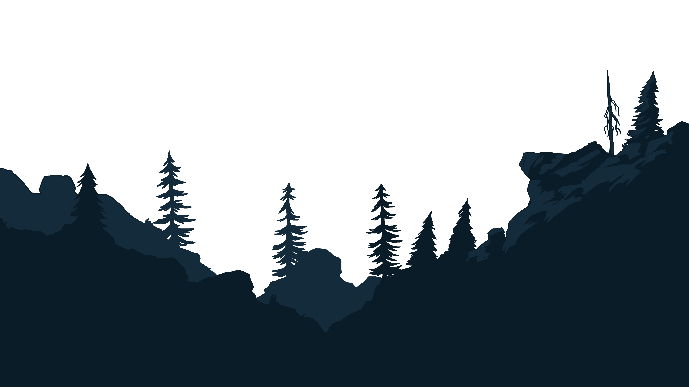
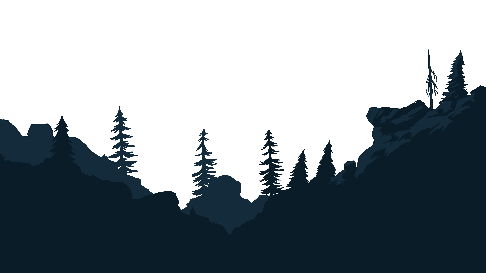
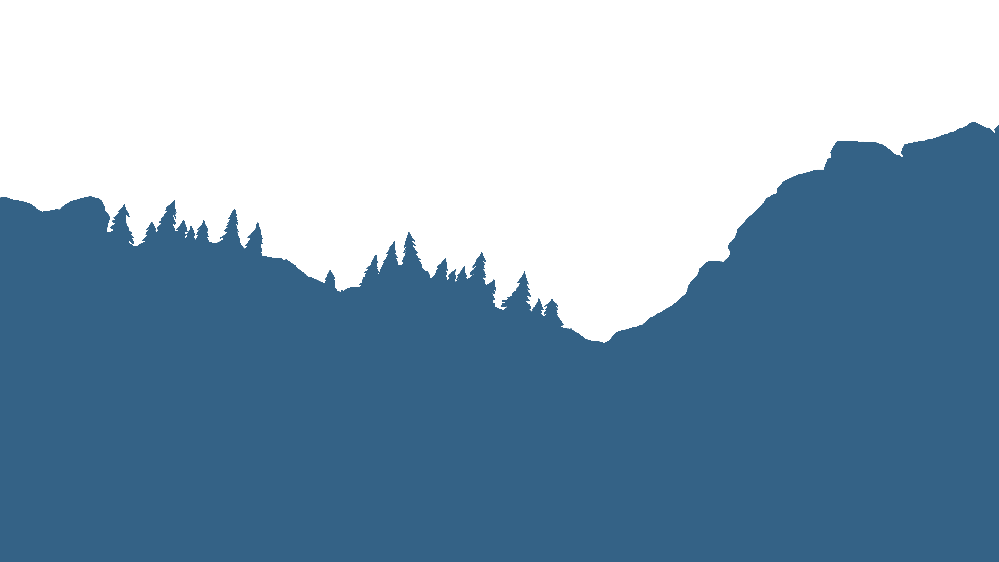
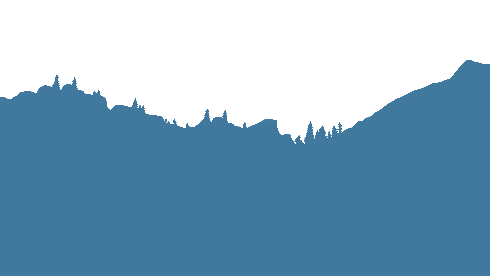
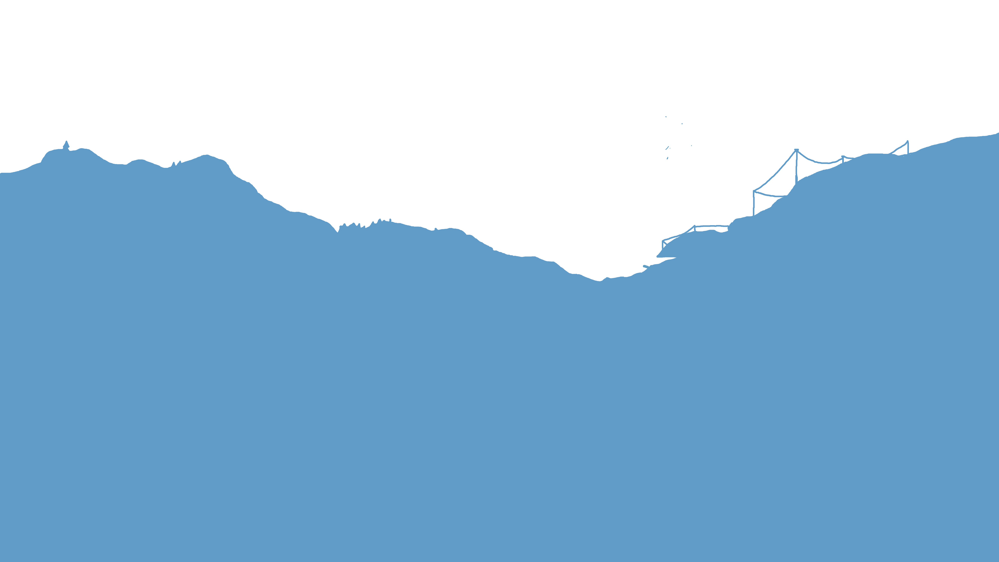
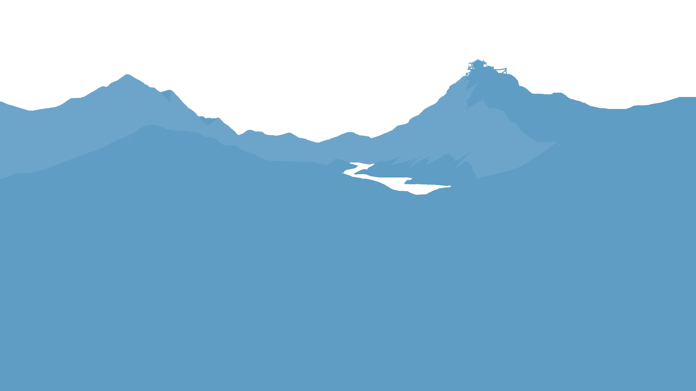
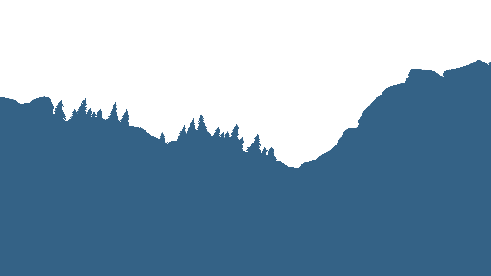
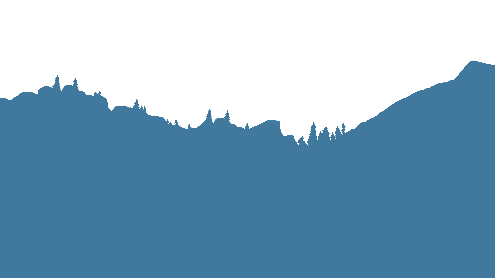
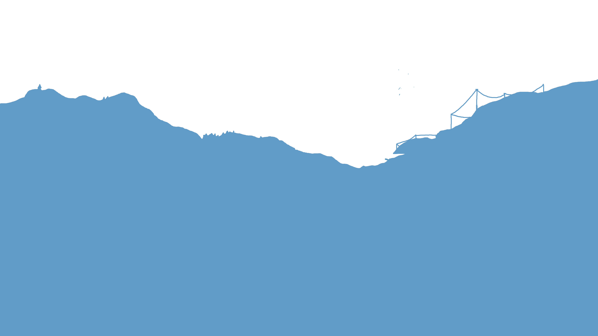
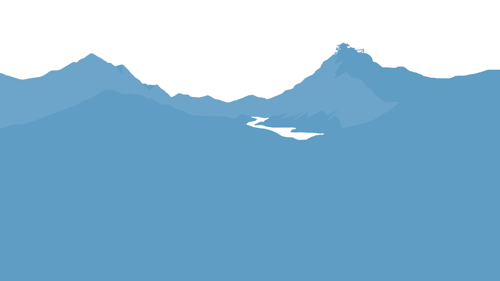

 







Welcome to my portfolio website.
Welcome to my portfolio website.
I'm a software engineering major in the Bay Area expecting to graduate in December 2027. I write code in languages such as Python, JavaScript, Java, and C++. I have experience with frameworks and libraries like React, Next.js, Flask, TensorFlow, Matplotlib, and NumPy. I'm interested in web app development, machine learning, and robotics.
I'm a software engineering major in the Bay Area expecting to graduate in December 2027. I like working on projects that offer solutions to problems people have, which may sound vague, but I see it as a way to give back to people who have helped me figure out how to solve my own problems.
I write code in languages such as Python, JavaScript, Java, C++, and I'm currently learning Rust. I have experience with frameworks and libraries like React, Next.js, Flask, TensorFlow, Matplotlib, and NumPy. I develop for macOS, Windows, and Linux, and cross-platform availability is important to me, so I also have experience with Docker containerization. I'm interested in web app development, machine learning, and robotics. With many projects of varying sizes, I use a lot of Git and GitHub for version control.
Outside of software development and engineering, I also love the arts. I won't fully label myself as an artist, since I am primarily a programmer, but I practice traditional arts like sketching and painting, and I play several instruments like the classical guitar and piano. I drew up the parallax mountain background on this website using Krita, an amazing open-source painting program.
In my free time, I run an unmonetized music curation channel on YouTube with a modest following of 85,000 subscribers, but it is a little too unprofessional to link here. I mention it as I believe the ability to grow and manage a community is a valuable skill to have, especially in fields such as software engineering, where collaboration has led to so many great projects used today.
Built with Python (Flask, TensorFlow, Matplotlib), JavaScript, and HTML/CSS.
A music classification and discovery tool using Essentia's genre_discogs400 model to output genre predictions for uploaded audio files. A Discogs release roulette with the ability to search for a specific genre was implemented by drawing a valid ID from the Discogs release database through its API.
This app requires too much memory to be hosted online with free services, but a Flask server can be run locally to use this tool. Note that genre classification is currently not supported for Windows as one of the core libraries used does not have Python bindings for Windows. I am currently working on a preprocessing pipeline to feed audio files into the pretrained model so it can work on Windows without the library.
Built with Rust and C++.
A USI-compatible shogi GUI written in Rust. For those unfamiliar with shogi, it is essentially Japanese chess and is generally considered very complex due to the ability to drop captured pieces back onto the game board. The move evaluation for this GUI is currently using the apery_rust shogi engine, and I plan to migrate to the YaneuraOu, a stronger shogi engine written in C++. I implemented joystick control with an Arduino UNO board, and plan to add support for more standard controllers such as Xbox and Playstation controllers.
View the source code on GitHub.Built with TypeScript (Next.js, React), Node.js, PostgreSQL, Tailwind, and HTML/CSS.
A social communication app based on Discord with features such as direct messages, group chats, and video calls. I primarily built this as a way to familiarize myself with Next.js and TypeScript, since I already had fullstack experience with vanilla JavaScript.
View the source code on GitHub.